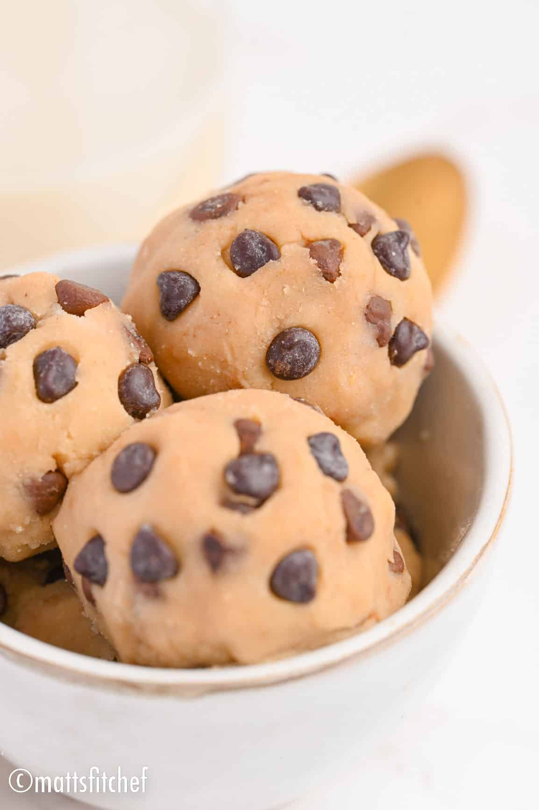

Protein Cookie Dough

Description
These low calorie banana protein brownies are the ultimate
macro-friendly dessert. With just 69 calories, these simple
protein brownies have 6.7 g of protein per serving. Healthy,
delicious and so easy to make!
Ingredients
- 30 grams protein powder
- 25 grams pwdered peanut butter
- 20 grams granulated sweetener
- 30 grams greek yogurt
- 1 tsp sugar-free chocolate chips
- 5 to 10 ml water
Steps
- In bowl combine protein powder, powdered peanut butter
(or peanut butter, see notes*) and sweetener.
After quickly mixing, stir in the Greek
yogurt. Keep on mixing!
- When doughy, start kneading the mixture with your hands.
Only if after kneading for a while your cookie
dough is still dry, add 5 to 10 ml of water to
consistency (if you add too much water, restore
the dough with some more protein powder, see
notes 4 and 5*).
- Fold in chocolate chips.
- Serve cookie dough right away or pop it in the fridge
and let chill (recommended).